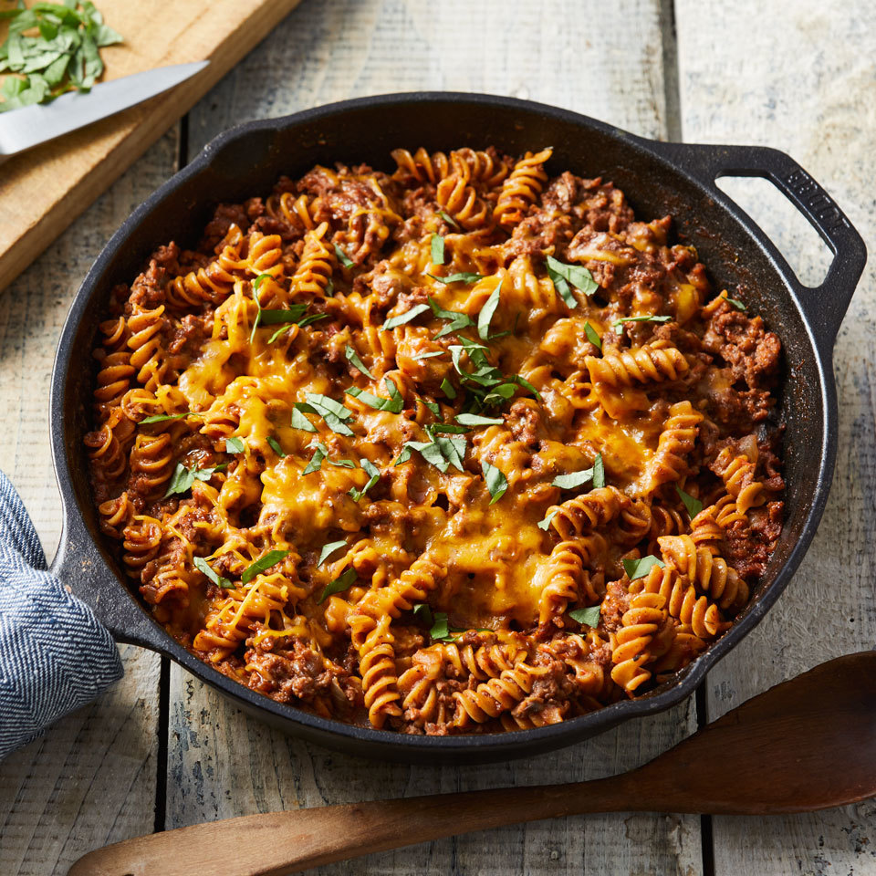

Main Ingredients

Lean Pasta
This recipe is very quick and requires minimal effort and ensures
that you've hit your daily protein macro. Below you will find the ideal and
necessary ingredients by price to enjoy its taste.
- Rigatoni Pasta-$1.89
- Ground Turkey (93% protein, 7% fat)-$4.99
- Pesto Sauce-$1.49
- Fat Free Mozzarella Cheese-$3.09
- Tomato Sauce-$0.69
- Baby Spinach pack-$2.59
Step By Step Process
- Texture ensures quality. Start by grabbing a pan and adding 3-4 cups of water, let it boil
for approximately 10-15 minutes on medium heat, 5-10 minutes on high heat.
- Next, we move on to cooking the ground turkey on a regular pan. Luckily, ground turkey
can be cooked without additional spices, however, for that essentric taste, use regular seasoning and sprinkle
a few hints of black pepper while the pan is heating on medium heat.
- Your third, and final pan will be used to mix in the ingredients for the sauce. Once your pan is heated,
(for multiple servings) empty a can of tomato sauce and let the sauce simmer for a few minutes.
You may add a cup of water to ensure the tomato sauce does not dry up in the process.
- Once the sauce is rich in texture, apply a handful of the fat-free mozzarella chesse to merge the flavors together.
- Apply a tiny spoon scoup of the pesto sauce, let it simmer for a few minutes and add some baby spinach on the pan.
Give it a good 2-3 minute mix to ensure the sauce is mixed in together.
- Now the fun part begins. Once your pasta is well-boiled, dump it into the sauce and give it a good mix. You'll notice
a drastic change in color and the flavors really mixing well together.
- Finally, throw your well-seasoned ground turkey into the pan and mix it all in to absorb the full texture of the protein-rich recipe.